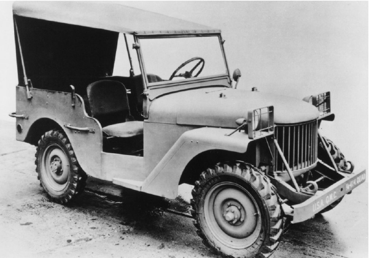

A TIMELESS TALE OF ADVENTURE
Jeep® 브랜드는 지난 78년 동안 자유, 모험, 진정성, 그리고 열정과 뗄래야 뗄 수 없는 관계였습니다.
Jeep®의 핵심가치가 모든 Jeep® 모델의 DNA에 구현되어 있습니다. Go Anywhere. Do Anything.®
이 단순한 슬로건이 아니라 하나의 삶의 방식임을 Jeep® 운전자는 오래 전부터 알고 있었습니다.
Jeep® 뱃지는 브랜드 그 이상의 것을 상징하며 사실 ‘명예의 훈장’입니다.
Jeep®의 전설적인 라인업을 자세히 알아보고 세월이 흘러도 변하지 않을 당신만의 스토리를 만들어 보세요.

1950's
1950년대는 레저 차량과 공학적 우위가 부상하던 시기였습니다. Jeep® 애호가 덕분에 Jeep® Jamboree 축제가 시작되었고, 7개의 고유 모델 덕분에 Jeep® 판매가 최고치를 기록하였습니다.
1970's
최초의 풀-타임 4x4 시스템 도입으로 70년대에도 Jeep®의 4x4 리더십은 계속됩니다. 스포티한 2-도어 풀-사이즈 Cherokee(SJ)가 올해의 4WD 상을 휩쓸었습니다. 6개 모델 덕분에 판매가 급증하고 최고치를 경신하였습니다.
1990's
All-New 1993 Jeep® Grand Cherokee(ZJ)는 온로드와 오프로드 성능의 독특한 균형을 통해 업계의 새로운 기준을 제시하였습니다. 신형 코일 서스펜션이 탑재된 고성능 Wrangler(TJ)가 1997년에 출시되었습니다. 1999년에는 신형 Grand Cherokee(WJ)가 최강 성능의 SUV로 자리잡았으며, 판매가 10년 동안 62만 9천대로 급증하였습니다.
2010's
Jeep® 브랜드는 2016년에 141만 대의 글로벌 판매량을 기록하면서 75년 역사상 최고치를 달성하였습니다. 앞으로도 Jeep®는 Grand Cherokee, Cherokee, Wrangler, Renegade, 그리고 Compass의 신규모델을 전략적으로 출시하면서 새로운 도약을 준비하고 있습니다.